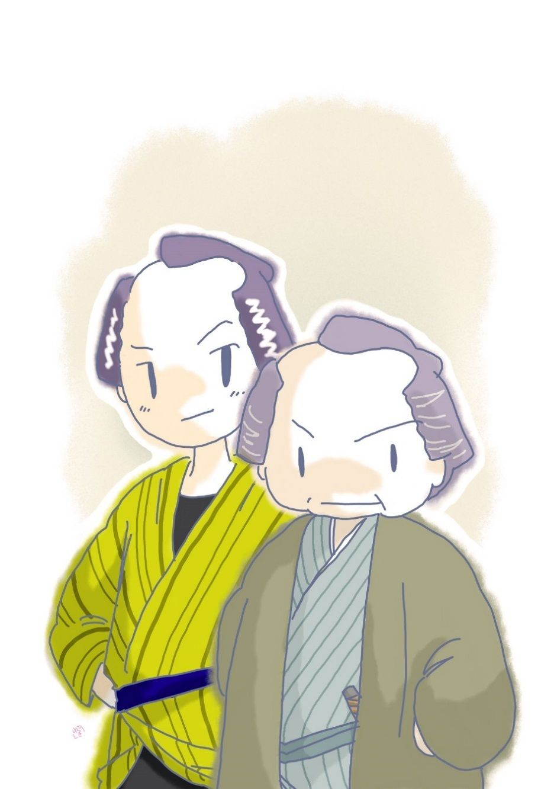

| 血潮と糠: 銭形平次捕物全集第23話 (銭形倶楽部) | |
| 野村胡堂 | |
| ZENIGATA CLUB (2018) | |
一
「親分、面白い話がありますぜ」
ガラッ八の八五郎、銭形平次親分の家へ呶鳴 り込みました。
「相変らず騒々しいな、横町の万年娘が、駈落したって話なら知っているよ」
銭形の平次は、恋女房のお静に顔を当らせながら、満身に秋の陽を浴びて、うつらうつらとやっているところだったのです。
「へッ、そんなつまらない話じゃねえ。------ところでお静さん、------いや姐御 って言うんだっけ------、親分の顔を剃 るのはよいが、右から左からいい男っ振りを眺めてばかりいちゃ、剃 り上げないうちに、後から後から生揃 って来ますぜ、へッへッへッ」
「まア、何んという口の悪い八五郎さんだろう」
お静は真っ赧 になって俯向 きました。赤い手絡、赤い襷 、白い二の腕を覗 かせて、剃刀 の扱いようも思いの外器用そうです。
「八、からかっちゃいけねえ。そうでなくてせえ、危っかしくて、冷々しているんだ」
「まア」
とお静。
「先刻も、止せばいいのに自分で襟を剃 って、少し剃刀を滑らしたんだ」
「自分の粗相 にしても、姐御の頸筋 へ傷を付けるのは虐 たらしいねえ」
「その血染の剃刀で俺の髭 を当っているんだから、一つ間違って手が滑 ると夫婦心中だ、ハッ、ハッ、ハッ」
平次はそんな気楽なことを言ってカラカラと笑っております。
「まア」
お静は又赧 くなりました。
「だがね、親分、仲のいい夫婦だからいいようなものの、他人同士じゃ血と血が刃物の上で交 るのは縁起が悪いと言いますぜ」
「そんな事を担 ぐ人もあるだろうよ。第一血染めの剃刀で当られちゃ気味が良くないやネ、------ところで八、手前 が触れ込んで来た面白い話ってえのは何だい」
平次は職業意職に返りました。剃 った後で顔を洗って、綺麗に拭き取ると、煙管 を伸ばして、縁側の日向へ煙草盆を引寄せます。
「あッ、忘れていた」
ガラッ八は自分の掌 でピシリと頬を叩きました。人間は少し甘いが、不思議にいい耳を持ったガラッ八は、平次に取っては申分のない見る目嗅 ぐ鼻だったのです。
「忘れるようじゃ、どうせたいした話じゃあるまい」
と平次。
「ところが大変なんで。野垂 れ死 をした若い物貰いが、百両持っていたんだから驚くでしょう。自慢じゃないがこちとら は、人様の袖に縋 ったおぼえはないが、どうかすると百文も持っていねえことがある」
「自分に引くらべる奴があるかい、------だが、筋は面白そうだね、もう少し詳 しく話してみるがいい」
平次も少し乗出しました。
「たったそれっきりの話さ、種も仕掛もねえところがこの話の取柄で」
「種も仕掛もねえことがあるものか、貰い溜めたにしても百両は大金だ。五年や十年で溜まるわけがねえ、------今お前 、若い物貰いと言ったろう」
「なあーる、恐れ入ったね、さすがに銭形の親分だ。若い乞食が百両溜めるわけはねえとは理窟 だね」
「感心していちゃいけねえ、その百両は小粒か、小判か、それとも証文か」
「それが小判なんで、封も切らずに二十五両包が四つ、外に貰い溜めらしい銭が二三百ありましたぜ」
「何？ 小判で百両？ それが種も仕掛もない話かえ。大泥棒が仇討 じゃあるまいし、お菰 が小判で百両持っているわけがあるもんか」
「成程そう言えばその通りだ、------親分も知っていなさるでしょう、観音様の裏にいる編 笠 乞食 」
「ウム」
「業病 に取っ付かれて、人に顔をさらさないが、物貰いにしちゃ色の白い、何となく身体に品のある若いのがいましたろう」
「それが死んだのかい」
「道端に坐って、朝から晩までお経 を読んでいたのが、何か食い物でも悪かったか、今日の昼頃のた 打ち廻って死んでしまったそうです。誰も構い手がねえから、まだ菰 をかけてありますよ------先刻町役人立ち合いで調べて見ると、胴巻から二十五両包が四つ飛出しゃがった。百両も持ってる癖 に、何だってまた物貰いの真似をしゃがるんでしょう、罰 の当った野郎じゃありませんか」
「そいつは曰 くがありそうだ、もう一度行ってみる気はないか」
「行きますとも、親分と一緒なら」
ガラッ八は飛上がりました。最上等の猟犬 のように、鼻さえもヒクヒクさせております。
二
神田から浅草へ、近い道ではありませんが、悠長 な時代で、平次が行き着くまで、行倒 れの死骸はまだ取捨てる段取にもならず、町内の番太が、迷惑そうな顔をしながら、寄って来る弥次馬を追っ払っておりました。
「これは銭形の親分、------高が物貰いの行倒れで、御手に掛けるような代物 じゃ御座いませんよ」
「どうせそうだろうが、商売 冥利 にちょいと見て行こう------小判で百両も持っていたっていうじゃないか」
「へエ------、大層溜めやがったもので、番太で駄菓子を売るよりは、余っ程歩がいいと見えますよ、へッへッへッ、------金は町内の旦那方が預ってありますが、何なら------」
「いやそれには及ばない、小判は物貰いの懐から出ても小判に間違いあるまい」
平次はそう言いながら、往来の人の疎 になったところを狙って、ヒョイと菰 を捲り上げました。
中には古綿をつくねたような、見る影もない乞食の死骸------と思うと大違い、苦悶 に歪 んで、妙に怪奇な身体の恰好になっておりますが、年の頃二十五六の、何となく美男という感じのする男の死体です。
それに、病気のせいもあったでしょうが、乞食にしては色も白く、業病業病といっても、ところどころ不気味な斑紋 はありますが、それも大したこともなく、見た感じは、それほど醜 くもなっておりません。
唯 平次が驚いたのは、死骸は素人の眼にも異常で、毒死 の跡がはっきり判ることだったのです。平次も日頃『検屍 弁疑 』位は読んでおりますが、その中の毒死の幾項 かは、この死骸にはっきり現れているような気がするのです。
「医者に立ち合って貰ったかい、爺 さん」
「いえ、それどころじゃありません、旦那方は秋祭りの支度で眼が廻る騒ぎで------」
番太の親爺 は心得たことを言います。
「八、検屍のやり直しというわけにも行くまいが、町役人にそう言って、念のため町内の本道を連れて来てくれ。道端の物貰いに毒を飲ませて、懐中の百両を盗らずに行くなんかは、少しおかしいよ」
「よし来たッ、町役人が文句を言ったら八丁堀まで飛んで行って、笹野の旦那に江戸一番という医者を連れて来て貰おうか」
「馬鹿だなア、八丁堀まで行っちゃ日が暮れるじゃないか、丁寧に頼むんだぞ」
「心得てるよ、親分」
ガラッ八は横っ飛びにスッ飛んで行きましたが、どう話をつけたものか、間もなく町役人と坊主頭の医者を一人、手を引張るようにして連れて来たものです。
医者は屍体の眼を見、唇を見、爪 を見、それから全身を調べて、薬箱から取出した銀の簪 、それを何やら薬液 に浸して屍体の口に入れ、暫くして取出して、水で洗って、
「フーム」
と眺めております。
「毒は何でしょう」
「そこまでは判らないが、毒を飲まされて死んだ事に間違いはない、この通り」
医者の差出した銀 簪 を見ると、成程その先が青黒く色変りがしております。
「死んだ後で口の中へ毒を入れたのじゃありませんね」
「そんな事はない。爪の色、眼瞼 の中がまるで違う」
「有難う、飛んだ手数をかけました」
平次は丁寧に医者を送り返しました。
「親分、大変なことになったね」
ガラッ八は妙な行掛りに、すっかり面喰っております。
「八、この男の身許 を洗ってくれ、生れながらの物貰いじゃあるめえ」
「そんな事なら訳はありません」
ガラッ八は足を宙に飛んで行きます。
三
「親分、大 縮尻 さ。こんなヒドい目に逢ったことはねえ」
ガラッ八が帰って来たのは、それから一刻ばかり経った時分、四方はすっかり暗くなって乞食の死骸も取片付けてしまってからでした。
「解らないのか」
番太の小屋でガラッ八の帰りを待っていた平次、幸先 が悪いと見たか、やおら立上がって、煙草入を腰に落します。
「小屋頭 を尋ねて、編笠 乞食 の身許を訊 いたが、どうしても言わねえ。堅気の方 が身を落したのは仲間の定法で元の名前は申上げられません。どうせ、こうなった身体だから、そんな事はどうでもいいじゃ御座いませんか。それに、あの編笠野郎は、余程深い仔細 があると見えて、自分からも言いません------とこう吐 しゃあがる」
「フム」
「その代り遺骸 はこっちで引取り、回向 万端手落なく致させます------てやがる。お貰いの仲間にも、坊主も穴掘りもいるんだってネ、親分」
「そんな事はどうでもいい、が、変死人と解っても、身許が解らなきゃア、何にもならない」
「ところが、親分、面白い話を聞込みましたぜ」
ガラッ八は、例のキナ臭いような鼻をしました。これは何か嗅ぎ出した時の表情です。
「何だ、八、物惜 みをせずに、言ってしまいな」
平次も少し不機嫌です。
「あの編笠乞食のところへ、毎日一度ずつ様子を見に来る娘があるんだってネ」
「何？ 誰がそんな事を言った」
「筋向 うの駄菓子屋の婆アがそう言っていましたよ。初めのうちは気が付かなかったが、近頃は毎日食べ物を持って来てやるから、ツイ顔を見る気になりましたって、------とんだ綺麗な娘だって言いますよ」
ガラッ八は到頭大変な事を嗅ぎ出して来ました。
もっとも、こんな騒ぎが始まると、大抵の人は掛り合いを恐れて、知ってる事も黙ってしまうのが人情ですが、ガラッ八の調子が開けっ放しで、人間が如何にも邪念 がなさそうなので、相手になっていると、うっかり舌 を滑らしてしまうのでしょう。それがガラッ八の取柄で、銭形平次に重宝がられている原因でもあったのです。
気さくな平次は、すぐ駄菓子屋へ飛んで行きました。反 っくり返った箱の中から、駄菓子を二三十文選り出させて、観音詣りの土産物といった体裁 に包ませながら、
「お婆さん、編笠乞食のところへ来る娘さんは、ありゃ何だろうねえ、大層な容貌 だって評判だが------」
「親分はよく御存じで、町内にもあの娘の事を知っているのは、そうたんとはありませんよ」
駄菓子屋の婆さんの舌は、思いの外滑らかにほぐれます。商売冥利 、お客への世辞のつもりだったかもわかりません。
「幾つ位に見えるだろう」
「十九 そこそこ、丁度にはなりませんねえ」
「身分は何だろう。男には眼の届かないところがあるものだ、お前さんが見たら判るだろう」
「それがね、親分、側へ寄って見たわけでも、声を掛けたわけでもありませんから、判然 したことは申上げられませんが、着物の好み、髪形などから見ると、下町の大店 のお嬢さんというところじゃ御座いませんか」
「成程、------ところで、編笠乞食との間柄は何だろう。兄妹 とか、許嫁 とか、話ぶりで見当は付かなかったろうか」
「それがネ、親分、こんなに離れていちゃ、聞こうと思っても聞えやしません。裏の井戸端にいる嫁の話声はよく聞えるんですが------」
姑 根性 ------と言うものでしょう、ガラッ八は危うく吹出すところでした。
「今日も何か食い物を持って来た様子かい」
「へエ、竹の皮包にして、お寿 もじ か何か持って来た様子です。お昼少し前でしたよ」
「確 かにそれを食ったろうね」
「娘さんの後姿を伏し拝むようにして食べてましたよ」
「で、その後で苦しみ始めたんだね」
「お鮨 を食べて小半刻も経ちましたかしら、暫くはそれでも我慢している様子でしたが、到底たまらなくなったと見えて、地べたを這い廻るようにして苦しみ出しました。見ちゃいられませんでしたよ」
「有難う、それだけわかりゃ、大助かりだ」
平次はホッとした心持になったのでしょう、思わず岡っ引の地を出して、こんな事を言ってしまいました。
四
「八、今日は大事な仕事だ。縮尻 るような事があっちゃ、取り返しが付かない」
「親分脅 かしっこなしに願いますよ、一体どんな野郎と噛み合やいいんで------？」
「喧嘩じゃないよ、あの娘の後を跟 けて、どこへ納まるか見届けりゃあいいんだ」
「へエ------」
ガラッ八は眼を見張りました。よくもこう目が届いたものです、花川戸の方から入って来た娘、町一杯に見通す位置に身を潜 めて、路地の口から、こちらを眺めているのを平次は指しているのです。
事件の翌る日、変死した乞食の身許を洗いようがないと解ると、平次は最後の手段として、馬道に朝から張り通して今日も来るかも知れない娘を待ったのでした。
「------身に覚えがなきゃア来るに決っている。覚えがあっても、下手人は後の様子を見たがるから、きっと来る------」
そんな事を言って、半日路地に立った平次とガラッ八は、昼少し前漸 く酬 いられて、目差す娘が白日の下に現われたのを見付けたのでした。
「綺麗だね、親分、あれを跟けるのは朝飯前だが、あんなに綺麗じゃ跟ける方で気がさす」
「何をつまらない、------それ、諦 めて帰って行くだろう。覚 られちゃ打ちこわしだ、そっと跟けて行け」
「合点、これも役得 さ。同じ跟けるなら、綺麗な新造の方がどんなに心持がいいか判らない」
八五郎は駆け出しました、が、思い直した様子で立止ると、裾を七三に端折って、手拭でヒョイと顔を包んだものです。ポカポカする秋日和 、頬冠りは少し鬱陶 しいが、場所柄だけに、少し遅い朝帰りと思えば大して可笑 しくはありません。
「銭形の」
不意に平次の肩を叩いた者があります。
「あ、三輪 の親分」
振り返ると、ニヤリニヤリと四十男が、平次の顔と、駆けて行くガラッ八の後姿を半々に眺めております。
三輪の万七という顔のいい御用聞、石原の利助が隠居してからは、銭形の平次を向うに廻して、事毎に手柄を争っている男だったのです。
「大層な手柄だってネ、行倒 の乞食の懐から小判で百両出たという話には驚かないが、その行倒れを毒死と睨んだ平次親分の目には恐れ入ったよ、------ここは馬道だから、筋を言や俺の縄張りだが、そんなケチな事は言わねえ、まア、折角やんなさるがいい。あの乞食が大名の落 し胤 だったりした日にゃ、大変な事になるぜ、ハッハッハッ」
万七はもう一つ若い平次の肩をポンと叩くと、言いたいだけの事を言ってクルリと、踵 を返しました。
「------」
平次は眉を顰 めましたが、妙に万七の様子に自信があるので、うっかりした事が言えません。
それから半刻 ばかりすると、ガラッ八は埃 と汗 に塗 れて飛んで来ました。
「親分ッ」
「何というざま だ」
「口惜 しいよ」
「口惜しくたって、泣く奴があるものか、大の男が------、娘を見失ったろう」
平次に図星を指されたのでしょう。
「見失ったんじゃねえ。娘の後を跟けて、浅草橋御門を出るといきなり横合から飛出した野郎が、ドカンと突き当るんだ」
「尻餅 をついたろう」
「尻に泥が着いているから、そんな事を言い当てたところで自慢にならねえ、------ね、親分、その突当った野郎は、あっしが起上がると胸倉を掴んで、ポカポカッと来やがるじゃないか」
一刻者 のガラッ八は、すっかり腹を立てて、親分の平次にまで食ってかかりそうです。
「それがどうした、八、落着いて物をいえ、大事なところだ」
「その野郎を誰だと思いなさるんだ。親分、三輪 の万七の子分、お神楽 の清吉だろうじゃないか。------手前 の親分の平次は、三輪の縄張を荒らして、事毎に恥をかかせやがる。今度という今度は、その敵 を討ってやるから、覚えていろってやがる」
「何だと八、敵を討つ？」
「清吉の野郎は確かにそういいましたよ、親分、身に覚えがありますかえ」
「馬鹿、敵の覚えなんかあってたまるものか、------それから娘はどうした」
「そんなに揉んでいるんだもの、女の足だって請合 い箱根の関を越す」
「つまらない事をいうな、到頭縮尻りゃがったろう」
「だって親分」
「三輪の子分なんかに係合 っているから悪いんだ。そんな時はな、八、後学のために言って置くが、殴 られ損にして逃げ出すんだ」
「------」
「見ろ、埃と汗と涙で、台無しじゃないか。往来の人が見て笑っているぜ」
「------」
「よくその扮装 で、浅草橋御門から駈けて来たものだ。そっちを向きな」
口小言を言いながらも、平次の眼も泣いておりました。汚 れ傷 ついて来た飼犬でもいたわるように八五郎の身体をクルリと廻して、せめてもの埃を叩いてやっております。
「親分、あっし は口惜しい」
「何をつまらねえ、------三輪の親分が、神田か日本橋で、何か嗅ぎ出したんだろう、------ところで、八、ここから浅草橋まで行くうち、娘は後ろを振り向いて見なかったか」
「後ろを振り向くどころか、横顔も見せねえ。お重詰らしい風呂敷を持って真っ直ぐに行きましたよ、あんまり後姿が綺麗だから、何遍か前へ駈け抜けて顔を拝もうとしたが------」
「馬鹿、そんな心掛けだから、お神楽の清吉に殴 られるんじゃないか」
「親分、何とか敵を討っておくんなさい。あのお神楽の野郎、あっし の鼻へ指を突っ込みゃがって、勘弁ならねえ野郎だ」
「ウ、フ、お前の鼻を見ると、指位突っ込みたくなるだろうよ。踵 でなくて仕合せだ、まア、勘弁してやれ」
「ね、親分、せめてあの娘の家だけでも判りゃア」
「その位のことならわけはないよ。三輪の万七親分か、お神楽の清吉の後を跟けていりゃア、日の暮れるまでにはきっと判る」
「有難てえ、それじゃ親分」
ガラッ八は又飛び出しました。
五
娘の素姓はすぐ判りました。
横山町の米屋------といっても、金貸の方で名高い万両分限 、越後屋佐兵衛の跡取 娘お絹、弁天 とも小町とも、いろいろの綽名 で呼ばれる、界隈 切っての美人だったのです。
編笠 乞食 の素性も、それにつれて次第にはっきりしました。
越後屋の手代弥三郎と言って、二十五。主人の佐兵衛が、今から二十五年前、観音様へ朝詣りをした時、雷門 の側に捨ててあったのを拾って、そのまま自分の子とも、奉公人ともなく育てたのでした。
佐兵衛夫婦は丁度生れたばかりの総領を喪 くして、悲歎にくれている時だったので、そのまま総領の乳母を留め置いて弥三郎を育てました。間もなく、姪 のお絹を貰って、跡取娘ということにしたのです。
二人は負けず劣 らず美しく可愛らしく育ちました。弥三郎は素姓も判らぬ拾い子ですが、維盛 様のような美男、お絹とは似合いの夫婦 雛 を見るようで、主人の佐兵衛も妙に許したような眼で見、二人の間柄も、淡い友愛から、次第に濃い恋へと変って行くのが、店の人達の眼にも、はっきり判るのでした。
そこへ主人の遠縁に当る、新助というのが割り込んで来ました。年は二十七、散々他の店で苦労して商売にも賢 く、人柄がまことに実直で、二三年の間に、すっかり弥三郎の占めていた地位を奪い、縁続きの関係があるにしても、今では番頭の茂助、支配人の民五郎に次いで、店にはなくてはならぬ人になって来たのです。
茂助は四十年も勤め上げた商売一点張の老人、支配人の民五郎は、佐兵衛の弟で、これは一と癖 も二た癖もある人間、若い時は随分放埒 な暮しもしたようですが、今ではすっかり堅くなって、兄の佐兵衛を助けて、家業大事に励 んでおります。
弥三郎は、妙に自分の不安定な地位を考えさせられる頃から、肉体の上にも、恐ろしい変化と崩壊 が始まっていたのです。
出入りの医者に診て貰って、それは、当時では癒 りようのない業病 と知った時の、弥三郎の驚きはどれ程だったでしょう。医者の口から漏 れるともなく、この事が家中に知れ渡ると、弥三郎はもういても立ってもいられない心持になっておりました。
親無し子を拾って、これまで育ててくれた大恩を思うと、この上越後屋に踏み止って、家族に迷惑をかけることは、血をわけない間柄だけに、弥三郎には忍びないことでした。
その上、まだあまり醜 くならぬうちに、お絹とも別れて、美しい記憶 だけでも残そうというのが、せめてもの弥三郎の望みだったのでしょう。
全国の霊場を巡 って、せめては後生を願おうといった、悲しい決心を定めると、佐兵衛の引止めるのも、お絹の歎きも振り切って、弥三郎は越後屋を飛出してしまいました。
それは三月ばかり前のこと、餞別 に貰った小判の百両を懐中に深く秘め、編笠に面体を隠したまま、先ず日頃信心する観音様の近くに陣取って心静かにうろ覚 えのお経 を誦 しながら、------せめては後世を------と悲しくも祈っているのでした。
業病を遺伝と思い込んだ当時の道徳では、弥三郎の態度はまことに見上げたものだったに相違ありません。
ところが、野天に寝て、不味 い物を食うようになってから、不思議に弥三郎の病気は癒 って行きました。全く治ったわけではありませんが、次第に身も心も軽くなって、年内に元の身体になるかも知れないと思う未練 が、弥三郎を江戸から一歩も踏み出させなかったのです。
お絹は人伝 に弥三郎が観音様のあたりにいると聞くと、矢も楯 もたまらず、横山町から毎日のように逢いに来ました。
頑固 な弥三郎は、部屋住のお絹が持って来る金などは、どうしても受取らなかったので、何時の間にやら、毎日変った食物を持って来て、弥三郎が編笠を傾 けてそれを食うのを、お絹は遠くから眺めて涙ぐんでいるようになったのです。
そのお絹の持って来た寿司 で弥三郎は殺されたのです。平次はこれだけの事を探ると、深々と手を拱 いて考え込みました。
六
平次は、兎に角横山町の越後屋に乗込んで行きました。今はおちぶれた弥三郎には相違ありませんが、自分の縄張り内に、人一人殺した下手人が、息を吐 いていると思うと、我慢がならなかったのです。
「あッ、銭形の親分、よくお出で下さいました。丁度今弟と相談して、お願いに上がろうというところでした」
主人の佐兵衛はよく禿 げた前額 を叩くように、薄暗い奥から飛んで出ました。
「何か変ったことがありましたか」
平次も少し面喰らいます。
「三輪の万七親分がいきなりやって来て、弥三郎を毒害した覚えがあるだろう------って、娘のお絹と甥 の新助を縛って行きました。そんな馬鹿なことがあるものですか」
佐兵衛はカンカンになって平次にまで食ってかかりそうです。
「親分、家出をして物貰いにまで身を落しているものを、何を物好きに殺す奴があるものでしょう。兄が腹を立てるのも無理じゃ御座いません」
民五郎も口を添えました。若い時分は上方から九州までも放浪して、身に余る野心を抱いたこともありますが、今ではすっかり落着いて、兄の莫大 な身上を切り廻して、何から何まで指図をしている四十男だったのです。
「へエ------、驚きましたな。新助さんという人には逢ったことがありませんが、お嬢さんを縛るのはどうかしていますよ、私が行ってよく話してやりましょう」
「何分宜しく願います。新助だって、そんな無法なことをする人間じゃ御座いません」
佐兵衛にくれぐれも頼まれて、平次はぼんやり外に出ました。
「親分」
「何だ、ガラッ八か」
「三輪の親分が、あの綺麗な娘を縛って行ったんだってネ、罰 の当った野郎じゃありませんか」
「何をつまらない」
「だってそうじゃありませんか、自分が殺した覚 えがあるものなら、翌る日も同じ時刻に、重 詰 の小風呂敷包なんか持って、馬道まで行きゃアしません」
「------」
「それに、馬道から浅草橋御門まで行くうち、あの娘が後ろを振り返って見たかって親分訊きなすったが、あれは成程図星 だ、後ですっかり恐れ入ったぜ、------後ろ暗いところのある人間なら、後も振り向かずに帰るってことはない。------ひょいと、これだけの事を考えるんだから、親分の脳 はたいしたものだ」
ガラッ八は首を傾 げたり、鼻の先を撫でたり、独りで感心しております。
「それだけ判りゃ、手前 も一本だ。八丁堀へ飛んで行って、笹野の旦那にそう申上げて見るがよい。お嬢さんはその場で縄を解かれるから------」
「親分は？」
「俺は他に用事もあるから、もう一度此家 の支配人に逢って見る」
「有難てえ、あっしの口一つで許される段取りになると、手もなくお嬢さんの恩人だね」
「まアそうだ」
「八五郎さん------と来たらどうしよう」
「馬鹿だね」
平次はそう言いながらも、この剽軽 な男、------ガラッ八の駆けて行く後姿を見ておりました。
話は飛びますが、平次が予言した通り、八丁堀へ引いて行って、奉行所のお白洲へ突出す迄の下調 をされていたお絹は、ガラッ八の弁明でその日のうちに許され、佐兵衛を呼出して、横山町の自宅へ帰しました。
「畜生、ガラッ八の野郎、つまらねえところへ出しゃ張る」
三輪の万七とお神楽 の清吉はプリプリしておりますが、与力の鑑識 ですることへ、文句の付けようもありません。
新助の方は止め置いて、二三日責 めました。弥三郎さえいなければ、お絹とめあわせられて、越後屋の跡取 になることは、あまりにも明白な新助だったのです。
お絹が弥三郎に未練があって、毎日浅草へ出かけるのを、新助は知らない筈もなく、知って嫉妬 心 を起さないとしたら、それは嘘になります。
「お絹さんが浅草とやらへ通うのは、店中の評判ですから、私もよく存じております。弥三郎が家出した後、私とお絹さんをめあわせるという下相談もあった位ですから、私もお絹さんの出歩きを苦々しいとは思いましたが、それ位のことで、人一人殺そうとは思いません。第一私には、そんな恐ろしい毒薬を手に入れようがありません」
口不調法なほど実直な新助は、これだけの事を何べんも何べんも繰り返して言うだけで、それ以上に隠し事も駈 引 もあろうとは思えなかったのです。
「旦那、見込違いで御座いました。新助という男は、人を殺せるような性 の人間では御座いません。あれは商売外の事は白痴 も同様の男で御座います」
四日目に、三輪の万七も到頭兜 を脱いでしまいました。縛って来た万七が見込違いと言うのを、笹野新三郎、吟味 与力 でも、留めて置くほどの証拠も自信も持っていません。
七
事件はその儘うやむやに葬 られそうでした。三輪の万七も間の悪さを我慢して、ちょいちょい顔は出しますが、暫くは手の下しようもなく、平次はガラッ八に言い付けて、横山町一円に泳がせましたが、名題の早耳も、大した面白い話を聞き込んだ様子もありません。
「三輪の万七親分は、お神楽 の清吉をうんと働かせて、新助の身持と、越後屋へ入るまでの奉公先を洗っていますよ」
ガラッ八はそんな事を言って来ました。
「フム」
平次の返事は一向張合がありません。
「厭が応でも、もう一度新助を縛る積りなんだね、------ところが、新助は生 え抜 きの米屋の手代だが、主人の弟の民五郎は、上方で薬種屋をやっていたことがあるんだそうですぜ」
「何だと？」
「薬種屋ならどんな毒薬でも手に入るでしょう」
「誰がそんな事を言った」
「番頭の茂助爺さんですよ。あの親爺は算盤 の事しか知らないのかと思うと、四十年も人の飯を食っただけに、なかなか気の付くところがありますよ」
「フーム」
「親分がまた腕を組んだ、この双六 も上がりが近いぜ。ね、お静さん------おっと姐御 、この秋は少し遠っ走りして、湯治 にでも行こうじゃありませんか」
ガラッ八はそう言って、晩の支度にいそいそと立ち働くお静の美しい後姿を見るのでした。
全く、このガラッ八の予言も見事に当りました。
翌る日の朝、越後屋から急の迎え。
「旦那が殺されて、新助どんが深傷 を負わされました。すぐ親分に------」
と言う使いの口上を半分も言わせず、平次は妻 楊子 を叩き付けるように、ガラッ八を促 して、横山町へ駆け付けました。
越後屋へ行って見ると、全く文字通り上を下への騒動です。
「親分、た、大変なことになりました」
飛んで出たのは、少し狸 に似た老番頭の茂助。
「飛んだ事だね、番頭さん」
平次は言い残して奥へ入りました。
薄暗い仏壇の奥、独り者の主人が昼でも時々は籠 っている八畳の間には、床から抜け出したままの佐兵衛、血の海の中にこと切れております。
傍には弟の民五郎、妙にウロウロして、何事も手の付かぬ様子で平次を迎えましたが、さすがに落着きを見せる積りか、血 飛沫 の中に、おののく膝を突いて、
「親分、御苦労様で」
そんな事を言っております。
平次は黙って会釈して、念入りにその辺を見廻しました。曲者 は雨戸を外して入ったらしく、縁側には泥足の跡などを付けておりますが、部屋の中には別にそんなものはなく、主人の佐兵衛は熟睡 しているところを、虫のように刺されたらしく、少し乗出し加減に虚空 を掴んでおりますが、深々と咽笛をえぐった傷の様子では、声をも立てずに死んだ様子です。
「恐ろしい腕前だ」
平次は思わずガラッ八を振り返りました。寝ている者の首が、半分千切れるほど切るのは、非凡の業 か腕力がなければなりません。
曲者の遺留品というのは、蠟塗 の脇差の鞘 が一本だけ。
「この鞘に見覚えはありませんか」
誰へともなく平次が言うと、
「へエ、そ、それは私の品で------中味は隣の部屋にあります」
待ち構えたように民五郎が言います。
次の間は深傷 を負わされた新助が寝ている、納戸 兼用の六畳です。
一足入ると、ここは更に惨憺 たる有様です。かなり取乱した中に床を敷いて、町内の外科が、新助の傷の手当をしているところへ、
「災難だったね、番頭さん」
平次は声を掛けます。
「へエ------、私はよろしゅう御座いますが、旦那がお気の毒で、何しろ昼の疲 れですっかり寝込んでいるところをやられたんですから」
新助はおどおどした顔を挙げました。
「曲者の顔を見なかったのかい」
「今申上げた通り、何かに驚いて、ハッと飛起きると、行燈 は消えて真っ暗でしょう、------旦那、旦那------と声を掛けるといきなり後ろからバサリとやられたんで------」
「それから」
「恥かしいことですが、それっきり眼を廻してしまいました。呼び起されて見るとこの有様で、へエ------、何とも申訳御座いません」
「謝 らなくたっていい、------ところで、その主人を呼んだ時隣の部屋に灯 が点いていたのかい」
「点いておりました、へエ」
「疲 れちゃ悪い、横になった方がいいだろう。全く災難だったね」
平次は新助の後ろへ廻って、外科の手当をしている傷を見せて貰いました。
右の肩下から、五寸ばかり定規 で引いたように斬り下げた刀 創 は、さまで深いものではありませんが、血の出ようがひどいようですから、随分気の弱い者は眼位は廻すでしょう。新助は長年の米屋奉公で鍛 えて、身体こそ立派ですが、人間は少し不愛想で、何となく臆病 らしいところさえあります。
「これが曲者の捨てて行った脇差かい」
「へエ」
平次は血刀を取上げて縁側へ出ました。朝の光りにすかして、切っ先から柄 、目貫 まで、丁寧に調べておりましたが、何を考えたか、風呂敷を借りてそれを包むと、
「この脇差はちょいと借りて行くぜ」
そう言って、今度は念入りに部屋の中を捜し始めました。
押人の中、箪笥 の上、脱ぎ捨てた着物、一つも平次の目を脱 れるものはありません。それが済むと、縁側へ出て、便所の手水場 の下をツクヅク眺めております。曲者が何か洗ったものか、そこの植込みや砂利は、ほんの少しですが、薄くなった血が流れています。
「親分、見当は？」
ガラッ八は心配そうに後から尾 いて来ました。
「まるっきり解 らないよ」
「へエ------」
「この家から人間を一人も出さないように手配してくれ。俺はちょいと出て来る。それから新助はなるべく一人でそっとして置く方がいいぜ、手負いは気が立っちゃ悪い」
「どこへ行きなさるんで------」
ガラッ八は追っかけて訊きました。
「まだ飯も食わないじゃないか」
「あっし だって食いませんよ」
「我慢しな」
平次は風呂敷に包んだ脇差を小脇 にフラリと外へ出ました。
八
その後へやって来たのは三輪の万七とお神楽 の清吉でした。
平次がやったと同じような探索 をして、一度門口へ出ましたが、思い直したように取って返すと、支配人の民五郎に縄を打って引立てます。
「八五郎兄哥 、念のために言って置くがネ、これだけ証拠の揃った犯人 を、平次親分がなぜ挙げなかったんだ。後で縄張りがどうのこうのと言わないことだぜ」
万七は冷たい言葉を浴びせると、ガラッ八を尻目に弥次馬の群がる中を、腰縄を打った民五郎を追っ立てて八丁堀へ引揚げるのでした。

吟味与力の笹野新三郎は、その時丁度平次と話し込んでおりました。
「万七が越後屋の支配人を縛って参りました」
取次がそう言うと、
「何、万七が？ ------兎に角庭へ廻せ」
その声を聞くと万七は、待ってたと言わぬばかりの顔を縁側へ出しました。
「旦那様、平次から御聞きで御座いましょう。越後屋の主人を殺し、手代に深傷 を負 わせた、支配人民五郎を挙げて参りました。浅草で編笠 乞食 の弥三郎を毒害したのも、此奴 の仕業 で御座います」
「フーム」
笹野新三郎が顔を挙げると、庭へはもう、お神楽の清吉が、民五郎を引据えております。
「兄哥、とうとう民五郎を挙げたね」
同じく縁側へ滑った平次は、天を仰いで歎息するようにこう言いました。
「それが悪いのか、銭形の、------弥三郎殺しを新助の仕業と思ったのは俺の鑑識 違いだったが、今度ばかりは外 れっこのねえ証拠がある」
万七は少しいきり 立ちます。
「二人共、静かにせぬか、------万七、何よりその証拠と言うのを聞こうか」
笹野新三郎は二人の争いをなだめてこう言います。
「申しますとも、第一に主人の佐兵衛と、養子分の新助を殺せば、あの身代は民五郎の自由になります。佐兵衛を斬ったのは、かなりの腕前ですが、民五郎は若い時ならず 者の仲間に交 って、腕も少しは出来るって言います。それから上方で薬屋をやった事もあるそうですから、弥三郎を殺した恐ろしい毒薬を持っていた筈です」
「------」
「それに、曲者は外から入ったように見せてありますが、縁側の泥足は、すぐその下の沓脱 にあった下駄でつけたもので、柔かい庭土の上には足跡もありません。曲者は内の者に決っております」
------随分ヘマな証拠を拵えたんだネ------平次はそう言おうとして口を緘 みました。万七と争ったところで仕様がないと思ったのでしょう。万七はしかし委細 構わず続けました。
「新助は怪しいが、自分であれだけの傷を背中へつけられるわけはなく、番頭は年寄で荒っぽい事の出来る柄ではありません。もう一つ、動きの取れない証拠は、主人と新助を斬った脇差はこの民五郎のもので、中味は銭形のが持っている筈で御座います」
万七の言葉には淀 みもありませんでした。
「それは非道だ。私は人を殺すような人間じゃありません。まして自分の兄を手にかけるなんて、聞いても恐ろしい------」
民五郎はあまりの事に転倒して、縛られたまま身を揉みますが、縄 尻 を押えたお神楽の清吉は、グイグイと引いて大地に押付けております。
九
「銭形の、民五郎が下手人でなきゃア、誰が殺したんだ。縄張 は縄張、物の道理は物の道理だぜ------。わざわざ笹野の旦那をおつれして、見事俺に恥を掻かせる積りだろうが、そんなわけにゆくものか」
万七はしきりといきり立っております。
「そんな訳じゃないよ、三輪の、口で言っても解らない事があっちゃ、人間一人の命にかかわるから、旦那を始 め皆んなの目で見て貰おうというんだ」
平次はそれを宥 めながら、横山町の越後屋の店から入って行きました。人殺しの現場へ、吟味与力を引張り出すということは、なかなか容易ならぬことでもあったのですが、新三郎は思う仔細 があるのか、黙って平次について行きました。それを迎えたガラッ八は、不思議な事の成行に、大きな口を開いて挨拶するのさえ忘れております。
惨憺 たる中を一通り見て廻った後で、平次は笹野新三郎と万七を縁側に誘 い出しました。
「この手水 鉢 の下の植込みと、白い砂利が血に洗われております。これは曲者が主人を斬った後で脇差 の刃を洗ったのでございます。脇差の柄 の真田 紐 が少し濡れておりますから、間違いは御座いません、------人を一人斬って、二人目を斬る前に、刀を洗うのは、並大抵の曲者にしては悠長過ぎはしませんでしょうか」
平次は重大な謎を投げかけました。それを解けるのが、------いつぞや平次が女房のお静に髭 を剃らせているのを見た、ガラッ八だけかもわかりません。
「------それからこの柱を御覧下さい、かなりひどく血が付いておりますが、これは手や着物から付いたのではなくて、傷口から飛沫 いたのです」
「------」
「主人の死体からも新助からも、遠い、この柱のこっちの側に血が飛沫く筈はありません。それに、新助は先刻、曲者に斬られた時主人の部屋の灯 が見えていた------と言っていました。ここで斬られて、後ろの灯が見える道理があるでしょうか、新助は斬られてすぐ目を廻しているので御座います」
「それでは下手人は誰だ」
笹野新三郎、たまり兼ねて言いました。
「お待ち下さいまし、この柱にこう脇差の柄 を縛って------」
平次はそう言いながら、自分の持っている風呂敷を解き、中から血だらけな脇差を出して、その柄を風呂敷で柱に縛り付けながら続けました。
「こう三尺五六寸のところへ脇差を縛り、刃を下へ向けて、切っ先に肩先を当て、スーッと上へ起ち上がると、人間の身体が背後 から斬り下げられたように真っ直ぐに下へ傷が付きます。新助の背中の傷は、定規 で引いたように真っ直ぐに斬り下げてありますが、人間の手で斬ったんでは、あんなに行くものでは御座いません」
そこまで聞くと、半身を白布で巻いて、ウンウン唸っていた新助は、いきなり起上がって這出そうとしました。
「八、その野郎を捕 えろ。臥 ている人間の首を半分斬落した恐ろしい力だぞ、手負いだと思って油断するな」
「何をッ」
猛烈な取っ組合いが始まりました。
平次が手を貸さなかったら、本当にガラッ八もどんな目に逢わされたか知れません。
「新助、まだ逃げるには早いぞ、もう少し聞かせることがある。この脇差の柄 を縛った前垂 をどこへ隠した。先刻まで、少し血が付いているのに気が付かずに、そこへ放って置いたろう、------俺はそれを隠させる積りでここを明けてやったんだ。俺が脇差の柄に糠 の付いてるのを眺めていると、手前 は急に糠だらけの前掛を気にしていたじゃないか」
「------」
新助はすっかり恐入ると急に背中の傷が痛み出したらしく、縛られたまま畳の上へ崩折 れました。
三輪の万七とお神楽の清吉は、何時の間に帰ったか、もうその辺にはいません。
「恐れ入ったね、親分、三輪の万七とお神楽の清吉がコソコソ逃げ出した恰好はなかったぜ」
「馬鹿ッ、つまらないことをいうな。俺は人を縛ると後の気持がよくねえ、------だが、あの野郎は助けるわけに行かなかったよ。もっとも、あれほどの悪党でも、主人の血の着いた脇差で自分を切る気がなかったのは不思議さ、余っ程、気味が悪かったんだね。それでとうとう露顕 したのも因 縁 だろう」
平次はそう言いながらガラッ八を促 して家路に向いました。
言うまでもなく新助は越後屋を乗取って、お絹を手に入れる積りだったのです。弥三郎を殺した毒薬は、民五郎が物好きで持っていたのを、用 箪笥 から盗み出したもの、これはお白洲 で判りました。
（編注）
作品中には、身体の障害や人権にかかわる、差別的な語句や表現が見られますが、本書が成立した当時の時代背景等が現代とは異なる古典的な文学作品でもあり、著者が故人でもありますので、底本のままとしました。ご理解、ご諒承のほどをお願い申し上げます。
著者---野村胡堂
挿絵---萩 柚月 © 2017
初出---「オール讀物」昭和八年十一月号 文藝春秋社
底本---「錢形平次捕物全集」第一巻 河出書房 昭和三十一年五月五日初版
編集・発行 銭形倶楽部